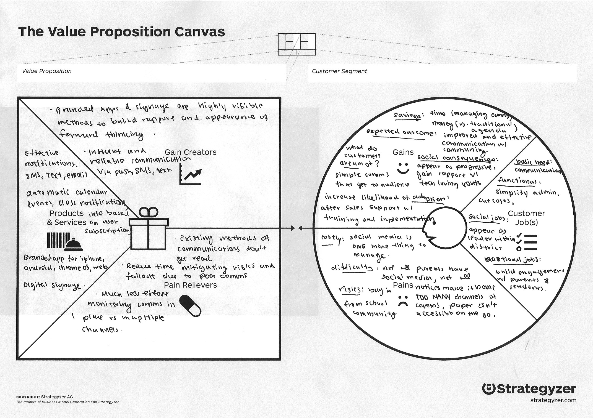
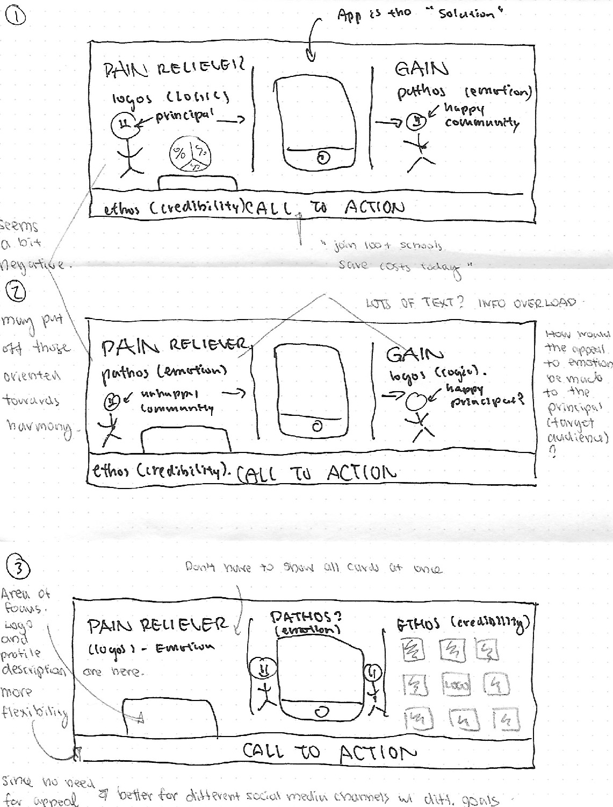

Appazur's core product is aan app that replaces paper student planners and notices. 1 tap contacts & info, a unified calendar, daily assignment reminders, and notifications via push, email, and SMS are some of the key features that enable frictionless engagement of today's busy parents and students.
Build a new versatile banner that Appazur can use across different social media platforms with consistent value proposition in order to improve the awareness portion of the sales funnel .
Appazur's branding across different social media platforms was not only inconsistent, but the branding that did exist didn't communicate the value that the product's features delivered, and in some cases, was nothing more than a stock photo.
Content Strategy, Prototyping, Visual Design
Graeme Cox
2 Weeks (Part Time)
Appazur
Since the messaging across different channels was inconsistent, I took the initiative to apply the Value Proposition Canvas to help clarify and improve the appeal.
Of the competitors with well branded social media presences, most banners had some combination of the following elements:
Based on my observations, I've categorized my observations into the following framework to the right.
In terms of where Appazur falls on the matrix, the featureset is relatively complex and has far reaching positive consequences that will have to be focused with the persona in mind.
Appazur is also a relatively unknown player in the school app space. SchoolWay in particular has the backing of Jostens, a 120 year old American manufacturer of memorabalia, while HoneyGarlic has the backing of 110 year old Canadian printer Friesens.
Based on this analysis, it makes sense to use text explanations for our featureset, as using images would require more space than we're given in the banner, and customer logos will be key to our social proof.
Layout candidates for the banner were ideated with Aristotle's Rhetoric Appeals in mind. That is, logos (logic), ethos (appeal to authority), and pathos (appeal to emotion). With the 3 appeals, I started with exploratory lo-fi mockups for the banner layout.
If we go back to the purpose of the project, a key success metric of the banner was to unify branding across different social networks where Appazur would naturally have different goals (e.g. driving awareness vs building a user community). The last layout lent itself best since the three appeals were self contained within the banner content, reducing a constraint in the call to action.
This was particularly important because not only might the call to action differ between social networks, but also the page layout. YouTube, Facebook, and Twitter actually all have their profile photos in different locations (bottom left for Twitter, top left for YouTube, Facebook's is separate from the banner). This made it especially important for the design's appeals to be free standing, and not require additional space in the banner's footer.
Since Appazur is not quite as well known as some of its competitors, an appeal to credibility was a key consideration in choosing a design layout. While the first two exploratory layouts didn't have much space for this, other than the footer, the last design has a considerably more real estate allocated towards ethos. This was made possible by integrating the appeal to emotion with the screenshot.
Although the last design doesn't as clearly identify the various pain relieves/gain creators for both the administrators and the school community, the goal of this banner was to improve the awareness section of the sales funnel. Describing the product is more in tune with creating awareness than the pain points, which is actually in the next section of the sales funnel - 'generating interest'. This also allows for a much cleaner design compared to the first two, which would be incredibly text heavy.
Looking back, the structured exploration of the interaction between the different layouts and the 3 Aristotlean appeals was actually incredibly valuable. To be specific, I probably would've left the screenshot in the middle as just a device with the image.
I'm extremely thankful for the help of my mentor Graeme Cox for the help provided during the whole way. I particularly like how the final iteration extends an invitation of ownership to users with its 'Your School Here' logo. Another function of its final form with the student AND parent on either side is that the banner clarifies the app's audience, since some competitor solutions are for either students, or parents only!
With the takeaways from above in mind, I look forward to exploring how different visual elements can be exploited for a more compelling effect towards viewers - perhaps, on Appazur's website.
As a side note, Appazur's monthly Twitter profile visits have actually increased by 5 times since the start of this project!
"Shopify Link"
Spotify Redesign